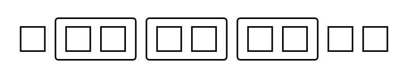
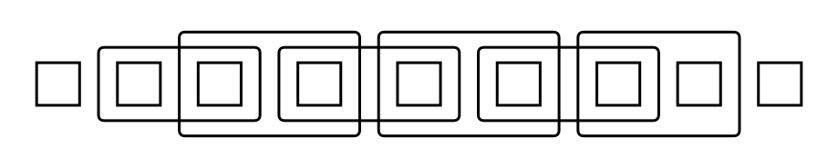
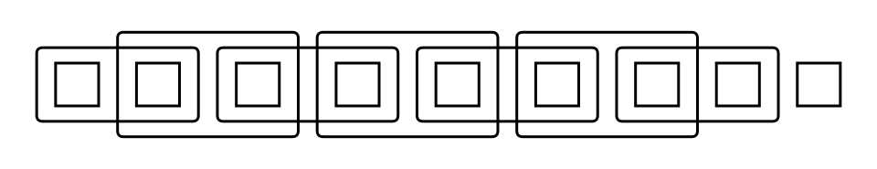
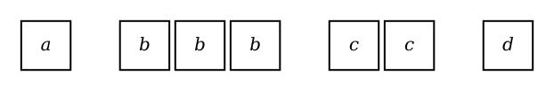
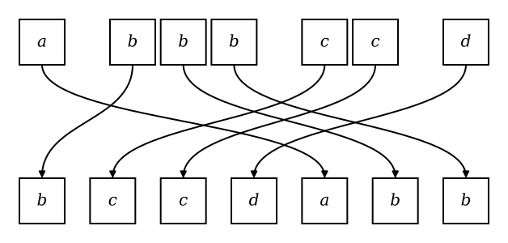
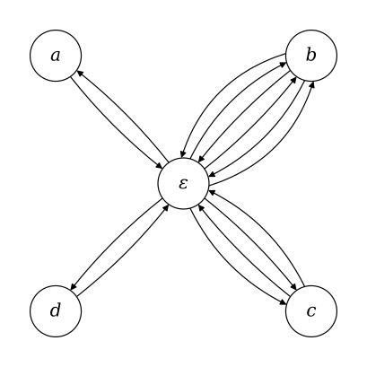
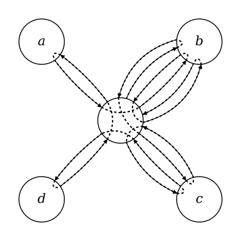
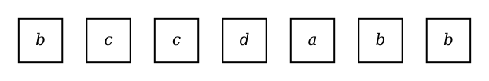
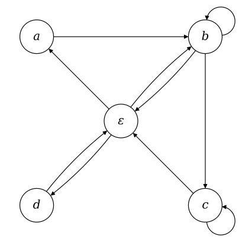
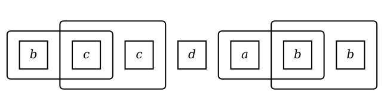

In a previous post, we showed that inductively growing a simple categorical text model using a greedy policy of maximal compression lead to a meaningful-looking constructions from the training data.
To bring the model closer to being capable of generating some kind of grammar by itself, as humans do, we complete the logic with the dual of chunking: categorization.
While chunking was formalized as joint symbols—a concatenation of consecutive symbols—categories are formalized as sets of possible symbols we refer to as unions.
1 Union Semantics
Unlike chunking, adding classes to a categorical model doesn’t immediately improve its predictive power.
1.1 Information of Joint Introduction
(this is a recap of the math supporting the previous post)
Encoding a categorical model of counts (multiplicities) \(n_0, n_1, ... n_{m-1}\) and instantiating it into a string of symbols matching those counts takes information approximately1 equal to:
\[\underbrace{\log {N + m - 1 \choose m - 1} \vphantom{\prod_{\displaystyle i}}} _{\displaystyle n_0,n_1,\ldots,n_{m-1} \vphantom{\prod}} + \underbrace{\log {N \choose n_0,n_1,\ldots,n_{m-1}} \vphantom{\prod_{\displaystyle i}}} _{\displaystyle\mathrm{String} \vphantom{\prod}} ~~~\text{where } N = \sum_i n_i.\]
Introducing a new joint symbol means docking the joint count \(n_{01}\) from individual symbol counts \(n_0\) and \(n_1\) and appending count \(n_{01}\) as a new “individual” count resulting in an increase in the description length of the counts vector:
\[\begin{align} \Delta I^*_{\mathrm{\bf n}} &= \log {N + m - n_{01} \choose m} - \log {N + m - 1 \choose m - 1}\\[5pt] &= \log \left(\frac{(N + m - n_{01})!\,N!} {m\,(N + m - 1)!\,(N - n_{01})!}\right) \\[5pt] \end{align}\]
and a decrease in the length of the encoding of the string (as a ranked permutation):
\[\begin{align} \Delta I^*_\mathrm{\bf s} &= \log {N - n_{01} \choose n_0 - n_{01}, n_1 - n_{01},\ldots,n_{m-1}, n_{01}} - \log {N \choose n_0,n_1,\ldots,n_{m-1}}\\[5pt] &= \log \left( \frac{(N - n_{01})!\,n_0!}{N!\,n_{01}!} \right) + \begin{cases} \log \left(\frac{\displaystyle 1}{\displaystyle (n_0 - 2n_{01})!} \right) & \text{when } s_0 = s_1 \\ \log \left(\frac{\displaystyle n_1!} {\displaystyle (n_0 - n_{01})!\,(n_1 - n_{01})!} \right) & \text{when } s_0 \neq s_1 \end{cases} \end{align}\]
which, together, are negative (i.e. reduce total information) only if the joint count \(n_{01}\) is sufficiently larger than what could be expected by independence.
1.2 Information of Union Introduction
Because of the way permutations (and their coefficients) compose, changing a categorical distribution by re-classifying symbols, then adding the appropriate codes to resolve the ambiguity inside those unions always has an insignificant effect on the total code length.
Say, for whichever reason, we place \(\ell\) symbols under a union \(S_{0\ell} = \{s_0,s_1,...,s_{\ell-1}\}\) with a cumulative count \(n_{0\ell}\) where
\[n_{0\ell} = \sum_{i=0}^{\ell-1}n_i~~,\]
moving their counts to a secondary counts vector produces a combined description length:
\[\begin{align} I^*_{\mathrm{\bf n}} &= \log {N - n_{0\ell} + m - \ell - 1 \choose m - \ell - 1} + \log {n_{0\ell} + \ell - 1 \choose \ell - 1}\\[5pt] &= \log \left( {N - n_{0\ell} + m - \ell - 1 \choose m - \ell - 1} {n_{0\ell} + \ell - 1 \choose \ell - 1} \right). \end{align}\]
Similarly, removing those counts from the encoding of the permutation and adding them to a disambiguating permutation separates the coefficient:
\[\begin{align} I^*_{\mathrm{\bf s}} &= \log {N - n_{0\ell}\choose n_\ell,n_{\ell+1},\ldots,n_{m-1}} + \log {n_{0\ell}\choose n_0,n_1,\ldots,n_{\ell-1}} \\[5pt] &= \log \left( {N - n_{0\ell}\choose n_\ell,n_{\ell+1},\ldots,n_{m-1}} {n_{0\ell}\choose n_0,n_1,\ldots,n_{\ell-1}} \right), \end{align}\]
which, by Vandermonde’s identity
\[{m+n \choose r}=\sum _{k=0}^{r}{m \choose k}{n \choose r-k},\]
are approximately equal to the initial code length.
Respectively,
\[\begin{align} I^*_{\mathrm{\bf n}} &= \log \left( {N - n_{0\ell} + m - \ell - 1 \choose m - \ell - 1} {n_{0\ell} + \ell - 1 \choose \ell - 1} \right)\\[5pt] &= \log {N+m \choose m}, \end{align}\]
and
\[\begin{align} I^*_{\mathrm{\bf s}} &= \log \left( {N - n_{0\ell}\choose n_\ell,n_{\ell+1},\ldots,n_{m-1}} {n_{0\ell}\choose n_0,n_1,\ldots,n_{\ell-1}} \right)\\[5pt] &= \log {N \choose n_0,n_1,\ldots,n_{m-1}}, \end{align}\]
match the initial code lengths once an additional \(O(\log m)\) is accounted for which happens to correspond to the length a code would take to specify which one of the \(m\) symbols is a now a union.
The bottom line is that in combinatorics, permutations are constant under hierarchical decompositions which, for our application, indicates that categories by themselves don’t offer value regarding the compression of the data.
1.3 Joints of Unions
The way to make unions do work for us is to put them into joints.
Where the previously described structure of categorization produces clusters of symbols in the alphabet:

we instead look for clusters in pairs—a “joint-of-unions”—such that they have a relatively high number of joints between them.

As a graph, the set of joint occurrences of symbols in a string form edges in a bipartite graph connecting left and right symbols. Then, we are looking for a subgraph with high connectivity.
Logically, this is a type of joint, specifically a product type containing the set of joints corresponding to the Cartesian product of the left and right union types:
\[\frac{s_0 \in A ~~~~ s_1 \in B}{(s_0,s_1) \in A \times B}.\]
Loosely speaking, the unions still don’t work themselves to reduce the size of codes—it’s only that through the introduction of the joint, unions will allow joint types to be defined between groups of symbols which, individually, would lack the numbers to justify the introduction of a construction rule for all the individual joints that the type covers.
2 Strategy
Unlike the enumeration of all joints which is a \(O(n^2)\) operation, the enumeration of all pairs of subsets of two sets is exponential at \(O(2^{2n})\) and computationally infeasible for all but very small alphabets.
We therefore skip the description of an exact greedy algorithm and instead call upon classical optimization techniques like hill climbing or EM, with a fixed number of random initializations to produce clusters in a top-down fashion.
To do so, we need to (1) generate random types and (2) mutate those types greedily until (local) maxima are reached.
2.1 Random Initialization
2.1.1 The Problem
Although the inclusion/exclusion of all available symbols for a right and left union form a simple Hamming basis in the space of possible types, e.g.
+---------- A ----------+
| |
{s0, s1, s2, s3, s4, ...} × {s0, s1, s2, s3, s4, ...},
0 0 0 0 1 ... 1 1 0 0 1 ...
| |
+---------- B ----------+randomly sampling this space and then counting the affected joints by:
\[\frac{s_i \in A ~~~~ s_j \in B}{(s_i,s_j) \in A \times B}\]
won’t always produce types that are optimal w.r.t. the joints they cover—in the sense that some symbols included in one side’s union type could have no joint with any of the symbols of the opposite union.
Informationally, the introduction could immediately be improved by dropping them from the type, thereby reducing the length of the code required to resolve the unions back into concrete symbols.
On the bipartite graph, this would correspond to unconnected vertices inside the subgraph of the joint type (but connected outside of it).
Fixing the randomly generated types by dropping unconnected symbols as a normalization step will produce a biased generation pointing away from the inclusion of any symbol with few associated joints. Similarly, enforcing “tightness” by including random neighbors for every dangling vertex, will be biased in the opposite direction.
For a truly uniform sampling of the space, we could re-sample every time “tightness” is violated, but experiments will show this is not reliable. We try this method on our dataset of choice: a 2006 snapshot of the English Wikipedia (XML format) truncated at different magnitudes from the start:
Filename Size (N) Size (bytes)
enwik1 10^1 10 B
enwik2 10^2 100 B
enwik3 10^3 1 KB
enwik4 10^4 10 KB
enwik5 10^5 100 KB
... ... ...For a given string, we collect all joint occurrences of pairs of symbols,
form top left and right
unions, randomly select symbols with a 0.5 probability in each union
and check whether the “tightness” property holds.
We repeat this at least \(10^6\) times for each dataset.
The unlikelihood of generating “tightness” by accident is immediately noticeable on a large enough dataset:
Filename P_tight (%)
enwik1 1.56208 %
enwik2 0.00157 %
enwik3 0.06044 %
enwik4 0.54991 %
enwik5 0.00000 %Intuitively: for a sufficiently large and diverse dataset, there are enough symbols which form isolated joints (two symbols that only appear in one joint together) that a random assignment either selects both or neither (the only arrangements that don’t break tightness) in every case becomes exponentially close to 0.
2.1.2 Tightness in a Graph
We can call a bipartite graph “tight” if it contains no isolated vertex, i.e. no vertex without an edge connecting it to an opposing vertex.
Since the left and right unions of all joints in a string contain only symbols that have at least one joint with another symbol in the string, the top joint type is “tight”.
The number of subgraphs in a “tight” graph that are also “tight” is the number of ways, for each subset of one of the unions, to select at least one vertex neighboring each vertex in that subset. In other words, given a subset of either the left or right union, the number of possible accompanying subsets on the opposite side is the number of ways to select at least one vertex for each set of neighbors of vertices in the given subset.
This reduces to the problem of counting hitting sets, (which is equivalent to counting set covers) for each subset of one of the unions, which is intractable in general. This means that sampling types by unranking uniformly sampled integers is equally intractable.
The best option we have at this point is to enforce the tightness invariant progressively through a sufficiently randomized selection, hoping that no bias arises.
By randomly selecting a side, a symbol in that side and a selection for that symbol (included/excluded), then propagating the choice by eliminating possible symbols that would be made dangling if later selected or introducing a random symbol among its neighbors if none are so far selected, we achieve a uniform-looking, 100% “tight” random type generation.
3 Extending the Categorical Model
To score different mutations of a randomly sampled joint type to greedily select the best, we express the length of the whole encoding before and after the introduction of a joint type and prior and after each possible mutation of that joint type.
Starting from the format used in the joints-only logic (marked with a \({}^*\)) as a sum of code lengths
\[\begin{align} I^*(m,{\bf n}) \leq~&~ \underbrace{2\log (m-256)\vphantom{\prod_{\displaystyle i}}} _{\displaystyle m \vphantom{\prod}} + \underbrace{2\log \left(\frac{(m-1)!}{255!}\right)\vphantom{\prod_{\displaystyle i}}} _{\displaystyle\mathrm{Rules} \vphantom{\prod}} + \underbrace{2\log N\vphantom{\prod_{\displaystyle i}}} _{\displaystyle N \vphantom{\prod}}\\[10pt] &+ \underbrace{\log {N + m - 1 \choose m - 1} \vphantom{\prod_{\displaystyle i}}} _{\displaystyle \mathrm{\bf n}: n_0,n_1,\ldots,n_{m-1} \vphantom{\prod}} + \underbrace{\log {N \choose n_0,n_1,\ldots,n_{m-1}} \vphantom{\prod_{\displaystyle i}}} _{\displaystyle\mathrm{{\bf s} : String} \vphantom{\prod}}, \end{align}\]
the \(\mathrm{Rules}\) term is replaced with one defining the joint types (\(\mathrm{Types}\)) and a new term that counts the information required to resolve each type back into joints is added (\(\mathrm{Resolution}\)).
3.1 Types
For introducing individual joints in the previous logic (one left symbol, one right symbol), two indexes with information \(\log(m)\) were sufficient to specify a construction rule, where \(m\) is the number of symbols before the introduction.
Cumulatively for a dictionary of \(m\) total symbols, that came out to
\[\begin{align} I^*_{\bf r}(m) &= \log\left(\prod_{i=256}^{m-1} i^2\right)\\ &= 2\log\left(\frac{(m-1)!}{255!}\right), \end{align}\]
assuming we start with 256 atomic symbols (a stream of bytes).
To encode a joint type inductively, each symbol defined so far needs to be potentially included or excluded, twice (once for each side), pushing the information per introduction from \(2\log(m)\) to \(2m\).
Still assuming 256 atomic symbols, we get a total
\[\begin{align} I_{\bf t}(m) &= 2 \cdot 256 + 2 \cdot 257 + \ldots + 2 \cdot (m - 1) \\[5pt] &= 2 \left( \sum_{i=1}^{m-1}i - \sum_{i=1}^{255}i \right) \\[5pt] &= 2 \left( \frac{(m-1)m}{2} - \frac{255 \cdot 256}{2} \right) \\[5pt] &= (m-1)m - 255 \cdot 256\\[5pt] &= \underbrace{m^2 - m - 65280 \vphantom{\prod}} _{\displaystyle\mathrm{Types} \vphantom{\prod}} \end{align}\]
3.2 Resolution
Given the final string of symbols, the definition of composite symbols is no longer sufficient to expand them back into a string of atoms, as symbols that are joint types now refer to sets of unspecified joints.
For each symbol \(t_i\), its variety is
\[v_i = V(t_i) = \begin{cases} 1 & \text{when }t_i\text{ atomic (fully determined)} \\ |A| \cdot |B| & \text{when }t_i\text{ joint type } A \times B \end{cases} \]
which, for joint types, is the number of joints under the type, i.e. the product of the sizes of its unions.
For each symbol \(t_i\), a code of length \[\log v_i\] is required to disambiguate each of the joints it is to instantiate into. The number of instantiation is \(n_i\) at the moment of introduction, but as subsequent introductions create chunks out of this symbol, this count \(n_i\) goes down while the number of joints to disambiguates remain constant, as disambiguations have to cascade through all parent definitions. We therefore refer to the count at the time of introduction as \(k_i\).
The sum of the lengths of all those codes is:
\[I_{\bf r}({\bf k}, {\bf v}) = \underbrace{\sum_i k_i \log v_i} _{\displaystyle \mathrm{Resolution} \vphantom{\prod}}\]
and the vector of initial counts \(\bf k\) can be reconstructed at decode-time given the vector of counts \(\bf n\) and the definition of the types \(\bf t\) by adding the counts of child symbols to their parent symbols.
Together, we have the total length of the encoding:
\[\begin{align} I(m,{\bf n},{\bf k},{\bf v}) \leq~&~ \underbrace{2\log (m-256)\vphantom{\prod_{\displaystyle i}}} _{\displaystyle m \vphantom{\prod}} + \underbrace{m^2 - m - 65280\vphantom{\prod_{\displaystyle i}}} _{\displaystyle\mathrm{{\bf t} : Types} \vphantom{\prod}} + \underbrace{2\log N\vphantom{\prod_{\displaystyle i}}} _{\displaystyle N \vphantom{\prod}}\\[10pt] &+ \underbrace{\log {N + m - 1 \choose m - 1} \vphantom{\prod_{\displaystyle i}}} _{\displaystyle \mathrm{\bf n}: n_0,n_1,\ldots,n_{m-1} \vphantom{\prod}} + \underbrace{\log {N \choose n_0,n_1,\ldots,n_{m-1}} \vphantom{\prod_{\displaystyle i}}} _{\displaystyle\mathrm{{\bf s} : String} \vphantom{\prod}}\\[10pt] &+ \underbrace{\sum_i^{m-1} k_i \log v_i \vphantom{\prod_{\displaystyle i}}} _{\displaystyle \mathrm{{\bf r} : Resolution} \vphantom{\prod}} \end{align}\]
which by reducing in value through strategic type introduction will result in compression.
3.3 Difference Across Introductions
To score different type introductions against each other, we formulate the difference in information produced by a single introduction.
First, we ignore the length of the encodings of hyperparameter \(m\) and \(\mathrm{Types}\) definitions which are constant regardless of which new joint type is introduced. Similarly, changes in the length of \(N\) are minimal and occur at intervals of powers of two regardless of the chosen type structure so we also ignore it for the scoring of types.
We are left with generalizing the difference in length of \(\bf n\) and \(\bf s\) from the introduction of a joint
\[(t_0,t_1) \mapsto t_m\]
from loss:
\[\begin{align} \Delta I^*_{(\mathrm{\bf n},\mathrm{\bf s})} &= \log \left(\frac {(N + m - n_m)!} {m\,(N + m - 1)!\,n_m!} \right)\\ &~~~~~ + \begin{cases} \log \left(\frac{\displaystyle n_0!}{\displaystyle (n_0 - 2n_m)!} \right) & \text{when } t_0 = t_1 \\ \log \left(\frac{\displaystyle n_0!\,n_1!} {\displaystyle (n_0 - n_m)!\,(n_1 - n_m)!} \right) & \text{when } t_0 \neq t_1 \end{cases} \end{align}\]
to the introduction of a joint type
\[\forall (a,b)\!:\! A\!\times\! B. (a,b) \mapsto t_m\]
with loss:
\[\Delta I_{(\mathrm{\bf n},\mathrm{\bf s})} = \log \left(\frac {(N + m - n_m)!} {m\,(N + m - 1)!\,n_m!} \right) + \sum_i^{m-1} \log\left(\frac{n_i!}{n_i'!}\right)\]
where \(n_i'\) is the updated entry in the counts vector \(\bf n\) after the type introduction, i.e. with however many times symbol \(t_i\) appears as either \(a\) or \(b\) (as \(A\) and \(B\) may intersect) subtracted from its previous count \(n_i\).
To this we add the difference in length of resolutions, which is only the addition of resolutions for \(t_m\):
\[\begin{align}\Delta I_{\bf r} &= \sum_i^m k_i \log v_i - \sum_i^{m-1} k_i \log v_i\\ &= k_m \log v_m \end{align}\]
which, at the time of introduction, is the same as
\[n_m \log v_m\]
All together, we get:
\[\begin{align} \Delta I_{(\mathrm{\bf n},\mathrm{\bf s},\mathrm{\bf r})} &= \log \left(\frac {(N + m - n_m)!} {m\,(N + m - 1)!\,n_m!} \right) + \sum_i^{m-1} \log\left(\frac{n_i!}{n_i'!}\right) + n_m \log v_m. \end{align}\]
3.4 Difference Across Mutations
As stated before, instead of evaluating the loss on all possible types, we apply mutations to a randomly sampled type, again in a greedy manner. For each type, there is a \(O(m)\) sized set of valid mutations: either adding or removing each symbol in the alphabet to each side’s union, unless they would produce isolated vertices, in which case pairs are added or removed together.
We evaluate the difference in code length incurred by each mutation individually, computing the difference in the difference in code length on the whole serialization.
\[\begin{align} \Delta\Delta I_{(\mathrm{\bf n},\mathrm{\bf s},\mathrm{\bf r})} &= \Delta I_{(\mathrm{\bf n},\mathrm{\bf s},\mathrm{\bf r})}' - \Delta I_{(\mathrm{\bf n},\mathrm{\bf s},\mathrm{\bf r})}\\[10pt] &= \log \left(\frac{(N + m - n_m')!}{n_m'!} \right) + \sum_i^{m-1} \log\left(\frac{n_i!}{n_i''!}\right) + n_m' \log v_m' \\ &~~~~~ - \log \left(\frac{(N + m - n_m)!}{n_m!} \right) - \sum_i^{m-1} \log\left(\frac{n_i!}{n_i'!}\right) - n_m \log v_m\\[10pt] &= \log \left(\frac{(N + m - n_m')!\,n_m!}{(N + m - n_m)!\,n_m'!} \right) + \sum_i^{m-1} \log\left(\frac{n_i'!}{n_i''!}\right) + n_m' \log v_m' - n_m \log v_m \end{align}\]
where \(n_i'\) and \(n_i''\) are the updated symbol counts of a symbol \(s_i\) by the introduction before and after the mutation, respectively. Original counts \(n_i\) (prior to the type introduction) of affected symbols cancel out and so do every count for symbols that don’t have their counts affected (\(\log\!\frac{n!}{n!} = 0\)).
With this compact formula, mutations can be incrementally added in a greedy fashion until a minimum/maximum is reached (i.e. hill climbing) or, to accelerate the process, all mutations with a negative loss can be added at once (if we make sure to enumerate a set of entirely independent mutations) and advance the state of the type to be introduced in alternating phases of evaluation and selection (i.e. expectation-maximization) until the minimum is reached.
3.5 Complexity Issues
Given the heavy bookkeeping required to make the previous algorithm usable, we approach the implementation with the intention of eliminating all operations equal or greater than \(O(N)\) in complexity, if not for each introduction, then at least for each mutation, and certainly when evaluating each mutation candidate.
Unfortunately, it looks like the expressiveness of joint types introduces too many contextual dependencies to make this possible.
3.5.1 Counting Joints in a String
For a pair of symbols
\[(s_0,s_1)\]
and a string of length \(N\), the loss associated with its introduction according the the previous logic is a function of three values: individual symbol counts \(n_0\) and \(n_1\), and the joint count \(n_{01}\). All of those parameters can be gathered in one \(O(N)\) pass over the string and only require \(O(n_{01})\) updates per introduction.
When \(s_0 \neq s_1\), all encountered joints count towards the joint count:

but when \(s_0 = s_1\), there is the subtlety that consecutive occurrences of the joint overlap:

and every other pair must be skipped and not contribute towards the joint count \(n_{01}\). This is easily managed by keeping track of parity when encountering spans of identical symbols while scanning the string and discarding joints that are not “constructible”.
3.5.2 Counting Joints of a Type in a String
For a joint type
\[A \times B\]
and a string of length \(N\), the loss associated with its introduction is a function of the total joint count \(n_m\) and as many individual symbols counts as there are symbols in both unions:
\[\Delta{\bf n} = \{~n_i ~|~ s_i \in A \cup B~\}.\]
Since every new type will produce distinct overlap events along the string, a single pass over the string is no longer sufficient to gather a record of those values.
Still, assuming we do a \(O(N)\) pass over the string for each newly sampled type, we must find a way to efficiently compute or bookkeep the differences in \(\Delta{\bf n}\) produced by each candidate mutation after each mutation application.
This becomes problematic when chains or arbitrary length of overlapping joints
can have their parity flipped by the introduction of a new symbol in the left union

producing a cascading effect in the structure of construction, ultimately only incrementing or decrementing the individual count of the last symbol in the chain.
By itself, this is still manageable if we keep track of all joint sites, constructive or not, for all joints in binary trees that merge and resolve collisions in less than \(O(N)\), keeping pointers between head and tail of each such segment, etc. But deletions of joints at random positions in a segment now requires each joint to also point to either the head or the tail, which would require on the order of \(O(n_m)\) updates at each mutation application, etc.
The simple fact that our permutation format has to deal with the introduction of non-overlapping chunks, while candidates for chunking are overlapping, creates a tension that keeps a seemingly straightforward extension from progressing further.
We therefore swap the underlying combinatorial model for something more appropriate.
4 A Conditional Model
While a multiset permutation model can be simplified by reducing the size of the string through the introduction of ever larger (non-overlapping) chunks:
we would be saved from micromanaging ever expanding sequences of chunks on the working string if we could freely introduce joints that overlap, evoking transitions between states more so than individually separable chunks:
Therefore, instead of using a vector of counts:

that is resolved into a string through the encoding of a permutation:

we transition to using a directed multigraph:

that is resolved into a string through the encoding of a path:


In this case, the path
\[\begin{align} \varepsilon &\to \boxed{b} \to \varepsilon \to \boxed{c} \to \varepsilon \to \boxed{c} \to \varepsilon \to \boxed{d} \to \\ \varepsilon &\to \boxed{a} \to \varepsilon \to \boxed{b} \to \varepsilon \to \boxed{b} \to \varepsilon.\end{align}\]
More precisely, a vertex is introduced for each symbol in the alphabet as well as an auxiliary empty string vertex labeled \(\varepsilon\) (epsilon). For as many occurrences of each symbol there is in the string, we have pairs of edges going back and forth to the \(\varepsilon\) vertex. Then, any path walking every edge in the graph—a Eulerian path— corresponds to a string with appropriate symbol counts.
It so happens that counting Eulerian paths in a directed graph is only as complex as computing a certain determinant on the Laplacian matrix which has complexity \(O(n^3)\) for a graph of \(n\) vertices, or \(O(m^3)\) for an alphabet of \(m\) symbols.
4.1 Counting Strings on a Graph
The exact number of Eulerian circuits in a directed multigraph is given by the BEST theorem as the product of the number of spanning trees and the factorial of each vertex’s degree minus one.
\[ec(G) = t(G) \cdot \prod_{v\in V}\left(\mathrm{deg}(v)-1\right)!\]
The number of spanning trees \(t(G)\) is equal by Kirchhoff’s matrix tree theorem to the determinant of the submatrix of the Laplacian where one row and one column are removed.
The Laplacian matrix of a directed multigraph is the difference between matrices \(D\) and \(A\):
\[L = D - A\]
where \(D\) is a diagonal matrix holding the outdegree of each vertex and \(A\) is the adjacency matrix where elements \(a_{ij}\) is the number of edges going from vertex \(i\) to vertex \(j\).
Using the example above, we would have the Laplacian:
\[\begin{align}L_{abcd} ~ &=~~\begin{array}{c@{\hspace{4pt}}c} & \begin{array}{ccccccccccc} \varepsilon & a & b & c & d & ~~~~~~~ & \varepsilon & a & b & c & d \end{array} \\[2pt] \begin{array}{c} \varepsilon \\ a \\ b \\ c \\ d \end{array} & \begin{bmatrix} ~~7 & 0 & 0 & 0 & 0~~ \\ ~~0 & 1 & 0 & 0 & 0~~ \\ ~~0 & 0 & 3 & 0 & 0~~ \\ ~~0 & 0 & 0 & 2 & 0~~ \\ ~~0 & 0 & 0 & 0 & 1~~ \end{bmatrix} - \begin{bmatrix} ~~0 & 1 & 3 & 2 & 1~~ \\ ~~1 & 0 & 0 & 0 & 0~~ \\ ~~3 & 0 & 0 & 0 & 0~~ \\ ~~2 & 0 & 0 & 0 & 0~~ \\ ~~1 & 0 & 0 & 0 & 0~~ \end{bmatrix} \end{array}\\[10pt] &=~~\begin{array}{c@{\hspace{4pt}}c} & \begin{array}{ccccc} \,~\varepsilon\,~ & \,~a\,~ & \,~b\,~ & \,~c\,~ & \,~d\,~ \end{array} \\[2pt] \begin{array}{c} \varepsilon \\ a \\ b \\ c \\ d \end{array} & \begin{bmatrix} ~{ 7} & -1 & -3 & -2 & -1~~ \\ ~{-1} & 1 & 0 & 0 & 0~~ \\ ~{-3} & 0 & 3 & 0 & 0~~ \\ ~{-2} & 0 & 0 & 2 & 0~~ \\ ~{-1} & 0 & 0 & 0 & 1~~ \end{bmatrix} \end{array} \end{align}\]
or for any such graph constructed from a multiset:
\[\begin{align}L_{\bf n} ~ &=~~ D_{\bf n} - A_{\bf n}\\[10pt] &=~~\begin{array}{c@{\hspace{4pt}}c} & \begin{array}{ccccccccccc} ~~~\varepsilon ~&~ s_0 ~& s_1 & \cdots &~ s_{m-1} ~& ~~~ &~ \varepsilon ~&~ s_0 ~&~ s_1 ~& \cdots &~ s_{m-1}~ \end{array} \\[2pt] \begin{array}{c} \varepsilon \\ s_0 \\ s_1 \\ \vdots \\ s_{m-1} \end{array} & \begin{bmatrix} ~~N & 0 & 0 & \cdots & 0 \\ ~~0 & n_0 & 0 & \cdots & 0 \\ ~~0 & 0 & n_1 & \cdots & 0 \\ ~~\vdots & \vdots & \vdots & \ddots & 0 \\ ~~0 & 0 & 0 & 0 & n_{m-1} \end{bmatrix} - \begin{bmatrix} 0 & n_0 & n_1 & \cdots & n_{m-1} \\ n_0 & 0 & 0 & \cdots & 0 \\ n_1 & 0 & 0 & \cdots & 0 \\ \vdots & \vdots & \vdots & \ddots & 0 \\ n_{m-1} & 0 & 0 & 0 & 0 \end{bmatrix} \end{array}\\[10pt] &=~~\begin{array}{c@{\hspace{4pt}}c} & \begin{array}{ccccc} ~~\varepsilon~~~~~ & ~~s_0~~ & ~~s_1~~ & \cdots & ~~s_{m-1} \end{array} \\[2pt] \begin{array}{c} \varepsilon \\ s_0 \\ s_1 \\ \vdots \\ s_{m-1} \end{array} & \begin{bmatrix} N & -n_0 & -n_1 & \cdots & -n_{m-1} \\ -n_0 & n_0 & 0 & \cdots & 0 \\ -n_1 & 0 & n_1 & \cdots & 0 \\ \vdots & \vdots & \vdots & \ddots & 0 \\ -n_{m-1} & 0 & 0 & 0 & n_{m-1} \end{bmatrix} \end{array} \end{align}\]
where \(N = \sum_i n_i\).
By Kirchhoff’s theorem, the number of spanning trees is the minor resulting from the deletion any one row and any one column in the Laplacian. Arbitrarily, we delete the firsts:
\[t(L_{\bf n}) = \mathrm{det} \begin{bmatrix} ~n_0 & 0 & \cdots & 0~ \\ ~0 & n_1 & \cdots & 0~ \\ ~\vdots & \vdots & \ddots & 0~ \\ ~0 & 0 & 0 & n_{m-1}~ \end{bmatrix} = \prod_{i=0}^{m-1} n_i.\]
Then, the number of Eulerian circuits is
\[\begin{align}ec({\bf n}) &= t(L_{\bf n}) \cdot \prod_{i=0}^{m}\left([D_{\bf n}]_{ii}-1\right)!\\ &= \prod_{i=0}^{m-1} n_i \cdot (N-1)! \cdot \prod_{i=0}^{m-1}\left(n_i-1\right)!\\ &= (N-1)! \cdot \prod_{i=0}^{m-1}n_i! \end{align}\]
which does not correspond to the number of strings (permutations) given a multiset, which is typically computed from the multinomial coefficient:
\[{N \choose n_0,n_1,\ldots,n_{m-1}} ~=~ \frac{N!}{\prod_i n_i!}.\]
4.1.1 Corrections on the Multiset Case
Inspecting the structure of a Eulerian circuit,
it is defined as a circular sequence of edges, while a string is defined as a sequence of characters, which here correspond to vertices. For each pair of vertices \(u\) and \(v\), all edges \(u \to v\) and all edges \(v \to u\) form equivalence classes that are overcounted in the number of Eulerian circuits from the perspective of strings.
Because in this case there are \(n_i\) incoming and outgoing edges for each symbol vertex, we get
\[\begin{align}\frac{ec({\bf n})}{\prod_i (n_i!)^2} &= \frac{(N-1)! \cdot \prod_i n_i!}{\prod_i (n_i!)^2}\\[10pt] &= \frac{(N-1)!}{\prod_i n_i!}. \end{align}\]
Finally, the BEST theorem counts unrooted circuits, meaning paths with their ends connected, a.k.a. cycles. On the other hand, a string has a definite beginning and end. This means the formula undercounts the number of strings by a factor of \(N\)—or the number of places a circuit can be “cut” into a string.
\[\begin{align}\frac{ec({\bf n}) \cdot N}{\prod_i (n_i!)^2} &= \frac{(N-1)!}{\prod_i n_i!} \cdot N \\[5pt] &= \frac{N!}{\prod_i n_i!}\\[5pt] &= {N \choose n_0,n_1,\ldots,n_{m-1}} \end{align}\]
With these corrections to the the BEST theorem, we can produce a formula for the number of strings given the adjacency and degree matrices.
4.1.2 General Formulation
Starting from the BEST theorem,
\[ec(D,A) = t(L) \cdot \prod_{i=0}^m\left(D_{ii}-1\right)!\]
we divide by the factorial of the size of each set of equivalent edges—which are all the entries of the adjacency matrix:
\[\begin{align}\frac{ec(D,A)}{\prod_{i,j}A_{ij}!} &= \frac{t(L) \cdot \prod_{i=0}^m\left(D_{ii}-1\right)!}{\prod_{i,j}A_{ij}!} \end{align}\]
and multiply by the number of ways to cut open a circuit at the starting vertex \(\varepsilon\):
\[\begin{align}\frac{ec(D,A) \cdot D_{00}}{\prod_{i,j}A_{ij}!} &= \frac{t(L) \cdot \prod_{i=0}^m\left(D_{ii}-1\right)! \cdot D_{00}} {\prod_{i,j}A_{ij}!}\\[10pt] &= \frac{t(L) \cdot D_{00}! \cdot \prod_{i=1}^m\left(D_{ii}-1\right)!} {\prod_{i,j}A_{ij}!}. \end{align}\]
4.2 Example
Using a graph instead of a multiset as a parametric model allows us to use counts of intersecting joints in the string. Consider the following chunking of the example string and corresponding graph.


The path to be encoded becomes
\[\varepsilon \to \boxed{b} \to \boxed{c} \to \boxed{c} \to \varepsilon \to \boxed{d} \to \varepsilon \to \boxed{a} \to \boxed{b} \to \boxed{b} \to \varepsilon.\]
The degree, adjacency and Laplacian matrices are:
\[\begin{align}L_{abcd}' ~ &= D_{abcd}' - A_{abcd}'\\[10pt] &=~~\begin{array}{c@{\hspace{4pt}}c} & \begin{array}{ccccccccccc} \varepsilon & a & b & c & d & ~~~~~~~ & \varepsilon & a & b & c & d \end{array} \\[2pt] \begin{array}{c} \varepsilon \\ a \\ b \\ c \\ d \end{array} & \begin{bmatrix} ~~3 & 0 & 0 & 0 & 0~~ \\ ~~0 & 1 & 0 & 0 & 0~~ \\ ~~0 & 0 & 3 & 0 & 0~~ \\ ~~0 & 0 & 0 & 2 & 0~~ \\ ~~0 & 0 & 0 & 0 & 1~~ \end{bmatrix} - \begin{bmatrix} ~~0 & 1 & 1 & 0 & 1~~ \\ ~~0 & 0 & 1 & 0 & 0~~ \\ ~~1 & 0 & 1 & 1 & 0~~ \\ ~~1 & 0 & 0 & 1 & 0~~ \\ ~~1 & 0 & 0 & 0 & 0~~ \end{bmatrix} \end{array}\\[10pt] &=~~\begin{array}{c@{\hspace{4pt}}c} & \begin{array}{ccccc} \,~\varepsilon\,~ & \,~a\,~ & \,~b\,~ & \,~c\,~ & \,~d\,~ \end{array} \\[2pt] \begin{array}{c} \varepsilon \\ a \\ b \\ c \\ d \end{array} & \begin{bmatrix} ~{ 3} & -1 & -1 & 0 & -1~~ \\ ~{ 0} & 1 & -1 & 0 & 0~~ \\ ~{-1} & 0 & 2 & -1 & 0~~ \\ ~{-1} & 0 & 0 & 1 & 0~~ \\ ~{-1} & 0 & 0 & 0 & 1~~ \end{bmatrix} \end{array}. \end{align}\]
The cofactor of the Laplacian and number of spanning trees is
\[t(L_{abcd}') = \mathrm{det} \begin{bmatrix} ~1 & -1 & 0 & 0~ \\ ~0 & 2 & -1 & 0~ \\ ~0 & 0 & 1 & 0~ \\ ~0 & 0 & 0 & 1~ \end{bmatrix} = 2\]
making the number of Eulerian circuits
\[\begin{align}ec_{abcd} &= t(L_{abcd}') \cdot \prod_{i=0}^{m}\left([D_{abcd}']_{ii}-1\right)!\\ &= 2 \cdot 2! \cdot 0! \cdot 1! \cdot 0! \cdot 0!\\ &= 4 \end{align}\]
and the number of strings
\[\frac{ec_{abcd} \cdot [D_{abcd}']_{00}}{\prod_{i,j}[D_{abcd}']_{ij}!} = \frac{4 \cdot 3}{1} = 12\]
which—since there are two ways to arrange the joints into three contiguous chains of joints—are as follows (our string in parens):
abb bcc d ab bbbc d
abb d bcc ab d bbbc
bcc abb d bbbc ab d
(bcc d abb) bbbc d ab
d abb bcc d ab bbbc
d bcc abb d bbbc ab.One can observe in the above enumeration that some strings of chunks
will become equivalent after concatenation since there are two ways to
walk across the graph to produce the substring a-b-b-b-c-c, namely
abb [ε] bccand
ab [ε] bbccwhich results in two pairs of equivalent strings in our enumeration, bringing the actual number of string to 10.
While only the first subpath is canonical for this substring assuming eager construction, I’m unsure of a the exact way to count and subtract those from the computation efficiently.
Ultimately, it is also possible that this increase in number of strings is not large enough to warrant consideration. Since code length is the log of the variety, as long as there are less non-canonical than canonical strings in our count, as is the case here, the difference in code length will be less than 1 bit.
Ignoring the encoding of hyperparameters: number of defined joints \(m\) and length of string (sum of counts) \(N\). Previous post has full formulas.↩︎